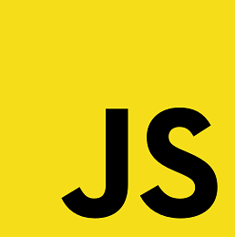

Olá meu nome é Mariana Carmo e contruo páginas web
Eu sou formada em Análise e Desenvolvimento de Sistemas e Atualmente estou participando do projeto Oracle ONE na Alura

Skills
CSS

Javascript
React
Sobre mim
Graduada em Análise e Desenvolvimento de Sistemas pela SPTECH em 2023, apaixonada por front-end. Estou constantemente atualizando minhas habilidades e conhecimentos para criar experiências digitais envolventes e intuitivas. Estou animada para contribuir com meu entusiasmo e habilidades para projetos desafiadores de front-end.